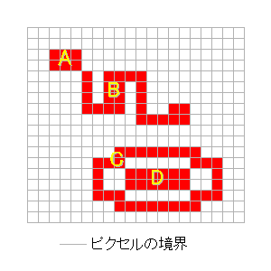
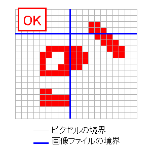
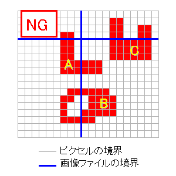
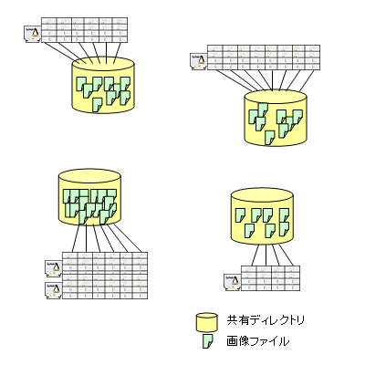
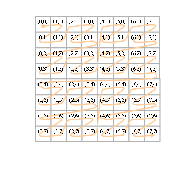

Grid Challenge in SACSIS 2005
規定課題詳細
多数のマシンに分散する画像ファイルに含まれる「物体」の総数を 求めよ。
各画像ファイルは巨大な矩形の二値画像(以下、元画像)の一部である。 全ての画像ファイルは一つの正方形領域を表し、一辺の長さは 全てのファイルで等しく、16以上、16,384以下の2のべき (つまり, 16, 32, ..., 8192, 16384のいずれか)である。 画像ファイル群はメッシュ上に並んでいる。つまり、隣接するふたつの 画像ファイルは一辺をまるごと共有しており、「ずれて」配置される ことはない。 画像の各ピクセルの色は0または1であり、一つ の物体は1のピクセルがつながった部分と定義される。ここで、 1のピクセルがつながっているとは、縦または横方 向に1のピクセルが並んでいる場合をいう(つまり、対角線方向に ならんだ1のピクセルはつながっているとはいわない)。
元画像中に含まれる物体の総数が10の9乗を越えることはない。
各問題には初級または上級の難易度が設定されている。 各問題の難易度は公開される。両難易度 を解答する場合に、同一プログラムを作成しても、別プログラムを作成しても 良い。
|  |
- 初級
- 各画像ファイルのふちのピクセルの色が1になることはない。 ここで画像ファイルのふちのピクセルとは、画像ファイルの境界線に 接するピクセルを言う。 そのため、それぞれの物体は単一の画像ファイル内に納まる。 したがって初級レベル用のプログラムは、画像ファイル毎に 物体の個数を求め、合計することに より総数を求めることができる。
- 上級
-
一つの物体は単一の画像ファイル内に納まるか、または多くとも二つの隣 接した画像ファイルにまたがる。 物体が二つの画像ファイルにまたがる場合には、プログラムは正しくそれを1 個と数えなければならない。
そのような、ファイルにまたがる物体の形状は、 以下のような条件を満たしていることが保証される。物体のファイル境界によ る「切れ目」は必ず一つの連続した線分となっている。たとえば、ドーナツ型 の物体の真中をファイル境界が切断することは無い。より詳細には、以下のよ うになる。一つの物体が、画像ファイルFAと、元画像上でその右に位置する画 像ファイルFBにまたがるとする。このとき、FAの右端のピクセルの集合と物体 を表すピクセル集合の共通集合は、連結(ひとつの長方形)である。FBの左端のピクセルの集合と 物体を表すピクセル集合の共通集合もまた、連結である。一つの物体が上下に 隣接したファイルにまたがる場合も同様とする。
|  |
|  |
画像ファイルの配置
画像ファイルは複数のマシンに分散して配置されており、すべてのマシン がすべてのファイルにアクセスできるわけではない。 各マシンからアクセスできる画像ファイルの集合は出題APIによって知らされ る(詳しくはC言語用API, Java用APIを参照)。
システム内にはいくつかの共有ディレク トリ(ファイルサーバ)が存在し、 各マシンはいくつかの共有ディレクトリのうち、 ひとつの共有ディレクトリへのみアクセス可能である(図4)。 画像ファイルは一つまたは いくつかの共有ディレクトリにおかれている(同じ画像ファイルの コピーが複数存在し得る。下記 「マスターファイルとレプリカファイル」参照)。 同じ共有ディレクトリをアクセス可能なマシン同士は、 結果として全く同じ画像ファイルの集合をアクセスできることになる。
|  |
マスターファイルとレプリカファイル
画像ファイルには、マスターとレプリカの2種類がある。 それぞれの画像ファイルの、マスターとレプリカは同一の内容である。 それぞれの画像ファイルに対し、マスターはちょうど 一つの共有ディレクトリにのみ存在する。 レプリカは、共有ディレクトリのうちのいくつか(0個のこともある)におかれる。
プログラムはマスターファイルのみを用いて総数を求めることが可能である。一 方、レプリカファイルも用いることにより、より効率的に問題を解けるかもしれ ない。どの場合も、正解を得るためには 各画像ファイルを一度ずつ数えることが必要である。
画像ファイル名
各画像ファイルは以下のようなファイル名を持つ。- マスター: PPXXXYYY.mdt
- レプリカ: PPXXXYYY.rdt
ただし、PPは問題番号(2桁)、XXXはファイルのX位置(3桁)、 YYYはファイルのY位置(3桁)である。 X位置は、一番左を0番目として、そのファイルが左から何番目かを表す。 Y位置は、一番上を0番目として、そのファイルが上から何番目かを表す。 本説明では省かれているが、出題APIから得られるファイル名は、前にディレ クトリ名のついたフルパス名である。PP, XXX, YYYとも左にゼロ詰めがされている。
例: 01012008.mdt は問題番号1の、左から12番目、上から8番目の画像のマス ターファイルである。
画像フォーマット
復号化
画像ファイルは簡易暗号化されており、出題APIから得られる復号化鍵によって復号 する必要がある。画像ファイル中の各byteと復号化鍵中の各byteを順にXOR演算する ことにより復号が行なわれる。復号化鍵のbyte列はcyclicに用いられる。
つまり、以下のようになる。暗号化画像ファイルのbyte列をC、復号後のbyte 列をPとする。復号化鍵のbyte列をKとし、その長さがL bytesであるとすると、 P[i] = C[i]^K[i % L]となる。(ただし、^はXOR演算、%は剰余演算とする)
画像データ
復号化後の画像ファイルは、4bytesのヘッダ部とそれに続くデータ部か らなる。
ヘッダ部は以下のような構造である。
| 0--1byte | 画像の幅(ピクセル) |
| 2--3byte | 画像の高さ(ピクセル) |
幅と高さはそれぞれ16bitsの整数で表されている。 バイトオーダーはリトルエンディアン(低位バイトが下位8bits) である。 本課題においてはそれぞれの画像ファイルは正方形であるため、幅と高さは 同じ値である。
データ部は、画像を表す2次元のビット配列を、Morton順序(Z順序と呼ば れることもあるが、以下ではMorton順序)と呼ばれる順番で1列に並べ、それを run-length方式で圧縮したものである。
Morton順序とは、2p x 2p の2次元配列の第(i,j)要素(0 <= i < 2p, 0 <= j < 2p)が、以下で決まる整数k番目(0 <= k < 2p * 2p) に来るように並べる 順序のことである。すなわち、i, jの2進数表現をそれぞれi1 i2 ... ip, j1 j2 ... jp (i1, i2, ..., ip, j1, j2, ..., jpはどれも0または1) としたとき、kは、j1 i1 j2 i2 ... jp ipを2進数表現にもつ数とする。言い替えれ ば、j, i を表すビット列から、交互に(jが先 で、j, i, j, i, ...の順に)1ビッ トずつ、左の桁から順に取り出してできた2p ビットのビット列がk (を表すビッ ト列)である。たとえば、Morton順序では、2次元配列の(3, 5)要素は、3 = 0...011, 5 = 0...101であるので、 00... 0100111 = 39番目に並ぶ(最初の要素 を0番目としている)。図4に、8 x 8の2次元配列(すなわち p = 3)の場合に、 Morton順序を図示する。図中の矢印が、Morton順序で小さいものから大きい 物への順序づけを示している。
|  |
次に、run-length圧縮とは、1次元のデータ列(今の我々の議論ではデータは0
または1のみなので、以下ビット列として説明をする)中、同じデータが連続し
て現れる部分を、データとその長さ(runと呼ぶ)で符合化する圧縮法である。
具体的には、画像ファイル中のデータ部は以下のような構造をしたrunの
列である。1つのrunは1byteまたは2bytesで、それらは最上位ビット
により区別される。
以下の表において、bit7は最上位ビット(MSB)、bit0は最下位ビット(LSB)
を表す。
- 1byte run
-
bit7 0 bit6 data bit5--0 lenm1 dataで表される色が、(lenm1+1)ピクセル連続して現われることを意味する。
- 2bytes run
-
0byte目
1byte目bit7 1 bit6 data bit5--0 lenm1H bit7--0 lenm1L dataで表される色が、(lenm1H*256+lenm1L+1)ピクセル連続して現われること を意味する。
以上をまとめると、ファイルに格納された生バイト列から、画像を表す2 次元配列を以下のようにして復元することができる。(1)ファイルの各バイト を暗号キーを使って復号化する。(2)復号化されたバイト列のデータ部を run-length圧縮が施されたデータと見なして解凍されたビット列を得る。(3) 解凍されたビット列が、2次元画像をMorton順序で並べた物であると見なして、 2次元の画像を復元する。
一部のファイルのみを用いた実行
予選/本選とも、元画像全体中の物体の数を答えることが要件であるが、 プログラムの動作確認や、一部のクラスタのみを用いて実行する 場合のために、全画像ファイルを用いなくても 解答の正否判定が行なえるように、出題/解答チェックAPIが設計されている。 プログラムは解答を解答チェックAPIに報告する際に、解答に用いたファイルの集合を 表すデータも共に報告する(詳細はAPIの記述を参照)。 APIは、用いられたファイルの範囲において解答が正しいかどうかを調べ、 判定を返す。 なお、用いられなかったファイルは全てピクセルの色が0であると見なされる。menu
what's new
Grid Challenge in SACSIS 2005